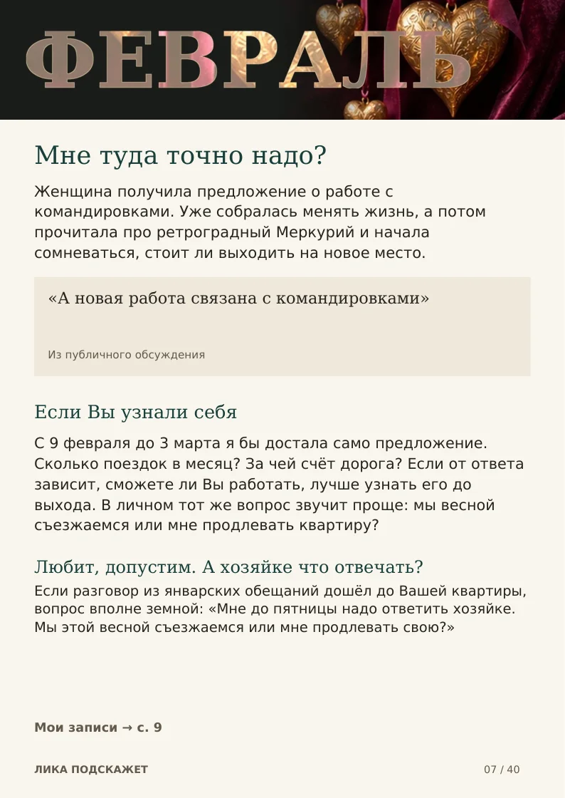
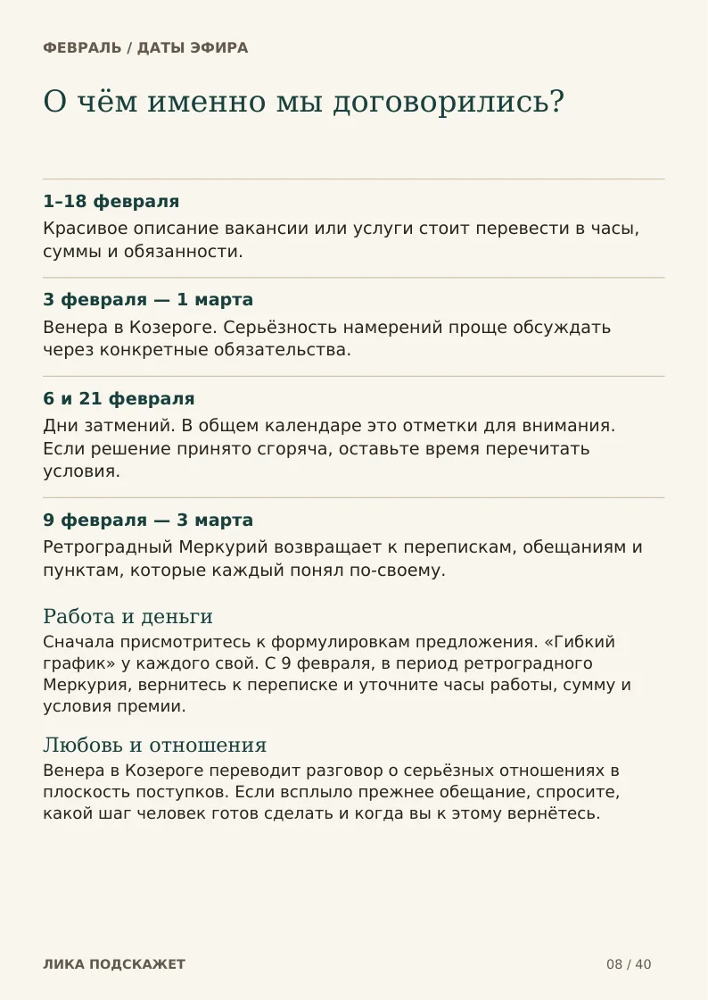
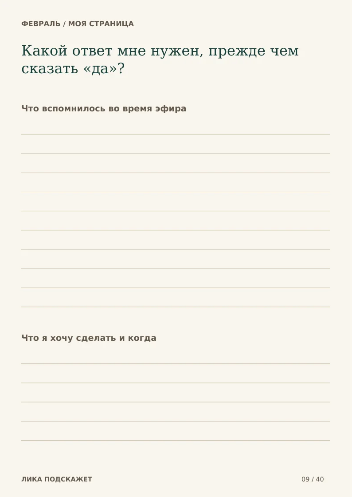
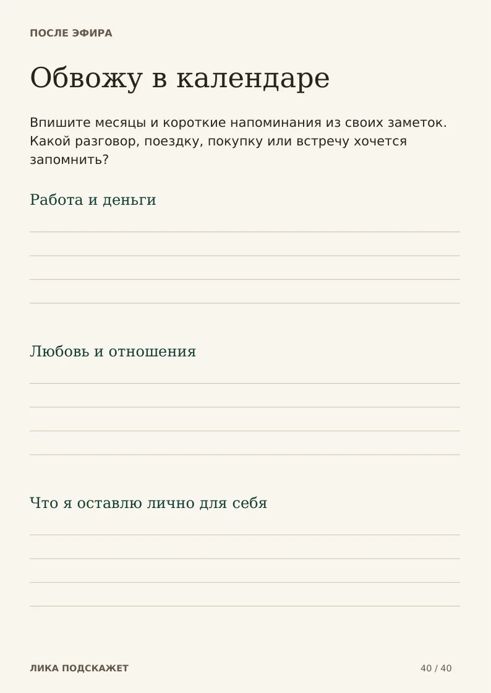

Внутри рабочей тетради · 4 страницы из 40«Любит, допустим.
А хозяйке что отвечать?»
До пятницы надо решить, продлевать ли аренду. А вы вроде бы собирались съехаться весной. Так начинается один из февральских разговоров. Полистайте страницы слева направо — от знакомой истории до места для своего ответа.
Как заполнить тетрадьЧто я запишу перед разговором?
Чего я жду?Что он сам вернётся к разговору о переезде.
Что мне нужно выяснить к пятнице?Продлевать квартиру ещё на полгода или мы уже выбираем жильё вдвоём?
Это пример заполнения. Свои ответы вы запишете в тетради после получения: в сохранённом у себя PDF или от руки на распечатке.
История февраля
Февраль по датам
Место для ваших записей
Итог года
Лика · астролог-прогнозистБывший написал. Меркурий, конечно, крайний.
Я Лика, астролог-прогнозист. Знаю английский, французский и немецкий. На консультациях чаще всего перевожу с четвёртого — астрологического. Бывший может явиться хоть в самый ретроградный четверг года. Вопрос-то у вас другой. Он хочет вернуться или ему просто стало скучно в одиннадцать вечера? Вот с этого места мне уже интересно смотреть карту.
У меня есть профессиональная долбанца. Если в карте что-то не сходится, я могу перепроверить расчёт, позвать коллегу и поспорить с ней над одним показателем. Вам потом достанется короткий ответ на нормальном русском. Весь наш астрологический педсовет можно пропустить.
И ещё про деньги. Когда ко мне приходят с одним конкретным вопросом, я сначала проверяю, смогу ли прочитать ответ по карте, и только потом беру оплату. По-моему, так честнее. Я-то карту закрою, а вам с этим человеком разговаривать, на эту работу выходить и вообще дальше жить.